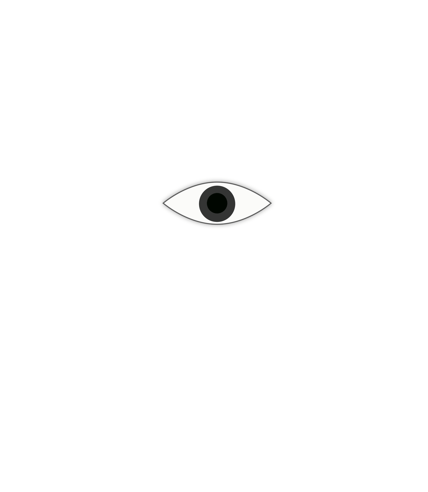
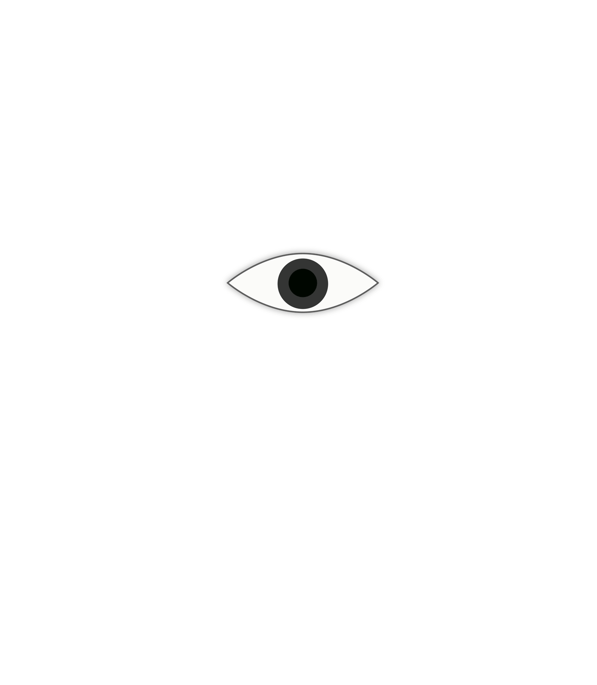

Click the eye to see what happen!
Full article with annotations is available here!
Designers don’t read
There's actually a book called Designers Don't Read, written by Fredrik Averin, Austin Howe. In the book Howe explores the creative process and conceptualization, and delves into what to do when inspiration is lacking.
New York School
The New York School was an informal group of American poets, painters, dancers, and musicians active in the 1950s and 1960s in New York City. They often drew inspiration from surrealism and the contemporary avant-garde art movements.
Pictorial Modernism
This term could refer to earlier statements " an enormous amount of graphic design is made by people who look at pictures but don’t know how to think about them".
how history is written affects how the past is seen and understood
Asking questions will be a good way to have critical thinking while reading, listening, or looking at historical materials. Historians usually show us in a narrow way about the past, and if we don't question we will blindly follow them into whatever way they lead us to. History usually avoids something and emphasizes the others, we need to look at it from all the angles that will lead us to have a more completed view.
historical stuff with no historical context
https://www.thoughtco.com/what-is-historical-context-1857069
In this article, author Grace Fleming claims the importance of understanding historical context in analyzing and interpreting literature. She redefines the historical context more clearly -"historical context refers to the social, religious, economic, and political conditions that existed during a certain time and place. Basically, it's all the details of the time and place in which a situation occurs, and those details are what enable us to interpret and analyze works or events of the past, or even the future, rather than merely judge them by contemporary standards."
Graphic design isn’t so easily defined or limited
One way I look at it is postmodern context has added diversity (minority voices), different culture, feminine symbolism, and complexity into graphic design.
It (Graphic design) isn’t a profession, it’s a medium
Graphic designer creates a bridge for one end to reach wider audiences, no matter it's a product, commodity, political message, or a brand name, their work itself acts as a way to communicate.
which they view design-and we view design
Argument between nature and nurture. In nurtural point of view, parental and educational perspective would decide how we view the world.
History came back as well
The remake of Dario Argento's Suspiria (1977) movie is coming back in early November 2018. The production design, the 70s' horror, and the story will come back with a new look but not detached from the historian influences.
Visual literacy is important, but it isn’t everything. It doesn’t teach you how to think.
I agree with "visual literacy isn't everything." but some people would argue that "doesn't teach you how to think" is a way to remain neutral, so readers would have different reactions/perspective toward one thing.
filtering the past; it’s a way of selecting what’s important to remember, shaping it and classifying it.
The process of selecting what's important and what's not is relatively subjective. It's at the hands of the historians.
This lens is selective: It zooms in on a subject and blocks our peripheral vision.
One example is in communist society schools teach kids working together and listen to authority is a way to go while in capitalist system schools teach kids having individual thinking and free mind, both of the ideologies are selective, they don't speak for every angle but instead, one point to start and from one perspective and emphasize on everything around it.
What we don’t see, in effect, didn’t exist.
When I saw a white squirrel in my neighborhood for the first time, I was so surprise "oh I didn't know squirrel could be white color". Generally we don't know things that we don't see usually, which is human nature for everyone. Through reading and watching documentary we will widen our view of the world.
Design that was used primarily for selling expensive but tasteful luxury products-design that can be put to those same uses today.
Design in the past was exclusive, only accessible for people who are rich.
A restricted view of the past creates an equally restricted view of the present. If we see the past as a series of artifacts, then we see our own work the same way.
It encourages designers to dig deeper into the existing design, understand strategies, cultural, economical, political context behind each movement and art, and after understand hows message work through design we will be able to create design on our own.
On this side is high design; on that side is low design.
Ellen Lupton and J. Abbott Miller in Design in Everyday Life (1996) pointed out "Low and high is a patterns, a conceptual shell, whose value shifts from situation to situation. What is high in one setting is low in another. In the space of a few years, a style can cycle from current chic to dated convention to camp nostalgia to neo-conservative revival... High and low pair is relative".
For design history to be worth anything, it has to have a more inclusive definition of graphic design and a more inclusive way of looking at graphic design.
Another way of saying including political, social, economic, cultural factors, diversity, and feminine element in design history, the context underneath the each pictorial surface. Dig into design to truly understand why and how they exist.
it is the history of graphic design and its audience.
For example, in revolutionary era in China the design trend was more focus on red which identifies as loyalty and patriotism(the China flag is red), the hero and labor images, which fits its communist image and "obey" message, directly influenced their audiences, the residents in China, and tried to "teach" them how they think.
It tells how political images have been crafted, how corporations have manipulated public perceptions, how myths have been created by advertising..
Using the same example as earlier, the Chinese people became really patriotic at that time because of the Propaganda Chinese government posters has implanted deep into mass audience's mind to call residents to be supportive to their party and to be obedient to their leader/authority.
the history of design as a medium and as a multiplicity of languages speaking to a multiplicity of people.
The color of red can mean terror in many western film scenes while it means holiday and festival in China. The implication of color can speak for one thing and represent one implication but another or totally opposite in other culture/country.
It has presented design as a parade of artifacts, each with a date, a designer, and a place within a school or movement.
In museums, art are labeled with date, name of the creator and probably place and related movement. It echoes the earlier statement that historian only "writes captions".
But each artifact marks more than a place in the progression of artistic sensibility. Each also speaks eloquently of its social history.
Here it emphasizes the importance of social and cultural elements at the time directly influenced the design and their creators. If looking at it without realizing the context behind it is a failure of understanding design.
The formal evaluation of objects is okay, but it’s tricky to evaluate objects from another era intelligently. Our aesthetic standards are different from those of the past.
Especially in the hands of technology, our aesthetic standards change rapidly and accordingly. When we look at our phones for example from 5 years ago they look like they are from long long time but it's because technology has been moving so fast not because the design at that time was bad.
Jive modernism.
Unlike modernism, jive modernism is detached from history or other contexts, instead it uses artifacts and styles in history in order to make a ‘composition’ of different elements.
Modernism failed because the spirit of it, the optimism, was lost. Modernism without the spirit is Trump Tower.
If optimism exist without context or any investigation into how it worked, how it will work again will be missing. History will lose its influence and meanings after all. Design will lose its impact if it only looks good at the surface, but lost the meaning that is behind the artifacts.
Modernism’s politics or philosophy.
Modernism is a philosophical movement that, along with cultural trends and changes, arose from wide-scale and far-reaching transformations during the late 19th and early 20th centuries. The development of modern industrial societies and the rapid growth of cities, followed by World War I.
We should focus not on its’ stylistic iterations but on its ideas.
Ideas that relates to political, social, cultural movements at that time, how it addressed a problem and how it delivers a message.
not see itself in the role of a service to the design profession, but as a history of ideas.
Ideas that relates to political, social, cultural movements at that time, how it addressed a problem and how it delivers a message.
but would situate the object in a historical moment and would reveal something about the way design works on its audience.
Like in Constructivism era, the forms and rules that was set up for designers act as a suppression tool. People were part of the machine; they were given the same rules for design. Form became manipulative.
A good history of design isn’t a history of design at all. It’s a history of ideas and therefore of culture.
Investigate the ideas, strategies, social impact behind the design, understand how culture has influenced the design movement at that time could help us understand design history.
It is the history of how we have come to believe what we believe about design.
The context behind a design, the idea, the cultural movement underneath the surface helps us understand design history before we move forward.
Bad design history offers us an alternative to having ideas. Bad design history says, here, this is nice, use it.
Bad design history could have mislead us to a wrong way to interpret design and idea, but good design history shows us to investigate and dig deeper what's behind a design, what context attached to it, and without it we won't truly understand design.
Good design history acts as a catalyst for our own ideas.
Design should stimulate us to take context into our design, and make our design more meaningfully, more able to speak out for its cultural, social, political impact.
Now, what can you do?
We should observe and investigate meanings and strategies behind design. Bear in mind that design speaks for its current cultural, social, political impact and movements, after knowing that we could use the same method, integrate different idea and context into our design.